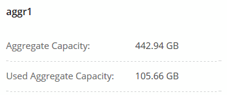

Amazon Web Services에서 직접 지원합니다
Amazon Web Services에서 직접 지원합니다
 Google 클라우드
Google 클라우드
 Microsoft Azure를 참조하십시오
Microsoft Azure를 참조하십시오
 문서 변경 요청
문서 변경 요청 이 페이지 편집
이 페이지 편집 기여하는 방법 자세히 알아보기
기여하는 방법 자세히 알아보기기존 볼륨 관리
Cloud Manager를 사용하면 볼륨 및 CIFS 서버를 관리할 수 있습니다. 또한 용량 문제를 방지하기 위해 볼륨을 이동하라는 메시지가 표시됩니다.
볼륨 관리
스토리지 요구사항의 변화에 따라 볼륨을 관리할 수 있습니다. 볼륨을 보고, 편집하고, 클론, 복원 및 삭제할 수 있습니다.
-
Canvas 페이지에서 볼륨을 관리할 Cloud Volumes ONTAP 작업 환경을 두 번 클릭합니다.
-
볼륨 관리:
작업 조치 볼륨에 대한 정보를 봅니다
볼륨을 선택한 다음 * 정보 * 를 클릭합니다.
볼륨 편집(읽기-쓰기 볼륨만)
-
볼륨을 선택한 다음 * 편집 * 을 클릭합니다.
-
볼륨의 스냅샷 정책, NFS 프로토콜 버전, NFS 액세스 제어 목록(엑스포트 정책) 또는 공유 권한을 수정한 다음 * 업데이트 * 를 클릭합니다.

사용자 지정 스냅샷 정책이 필요한 경우 System Manager를 사용하여 생성할 수 있습니다. 볼륨의 클론을 생성합니다
-
볼륨을 선택한 다음 * 클론 * 을 클릭합니다.
-
필요에 따라 클론 이름을 수정한 다음 * Clone * 을 클릭합니다.
이 프로세스에서는 FlexClone 볼륨을 생성합니다. FlexClone 볼륨은 메타데이터에 작은 양의 공간을 사용하고 데이터가 변경 또는 추가됨에 따라 추가 공간만 사용하므로 공간 효율적인 쓰기 가능한 특정 시점 복사본입니다.
FlexClone 볼륨에 대한 자세한 내용은 를 참조하십시오 "ONTAP 9 논리적 스토리지 관리 가이드".
스냅샷 복사본에서 새 볼륨으로 데이터를 복원합니다
-
볼륨을 선택한 다음 * 스냅샷 복사본에서 복원 * 을 클릭합니다.
-
스냅샷 복사본을 선택하고 새 볼륨의 이름을 입력한 다음 * 복원 * 을 클릭합니다.
필요 시 스냅샷 복사본을 생성합니다
-
볼륨을 선택한 다음 * 스냅샷 복사본 생성 * 을 클릭합니다.
-
필요한 경우 이름을 변경한 다음 * 만들기 * 를 클릭합니다.
NFS mount 명령을 가져옵니다
-
볼륨을 선택한 다음 * 탑재 명령 * 을 클릭합니다.
-
복사 * 를 클릭합니다.
iSCSI 볼륨의 대상 IQN을 봅니다
-
볼륨을 선택한 다음 * 대상 IQN * 을 클릭합니다.
-
복사 * 를 클릭합니다.
기본 디스크 유형을 변경합니다
-
볼륨을 선택한 다음 * 디스크 유형 및 계층화 정책 변경 * 을 클릭합니다.
-
디스크 유형을 선택한 다음 * 변경 * 을 클릭합니다.
Cloud Manager에서 볼륨을 선택한 디스크 유형을 사용하는 기존 Aggregate로 이동하거나 볼륨에 대한 새 Aggregate를 생성합니다. 계층화 정책을 변경합니다
-
볼륨을 선택한 다음 * 디스크 유형 및 계층화 정책 변경 * 을 클릭합니다.
-
Edit Policy * 를 클릭합니다.
-
다른 정책을 선택하고 * 변경 * 을 클릭합니다.
Cloud Manager에서 선택한 디스크 유형을 사용하는 기존 애그리게이트로 볼륨을 이동하거나, 볼륨에 대한 새 애그리게이트를 생성합니다. 볼륨을 삭제합니다
-
볼륨을 선택한 다음 * 삭제 * 를 클릭합니다.
-
확인하려면 * 삭제 * 를 다시 클릭합니다.
-
볼륨 크기를 조정합니다
기본적으로, 공간이 부족할 때 볼륨이 자동으로 최대 크기로 커집니다. 기본값은 1,000이며 이는 볼륨이 크기가 11배로 커질 수 있음을 의미합니다. 이 값은 커넥터 설정에서 구성할 수 있습니다.
볼륨 크기를 조정해야 하는 경우 에서 조정할 수 있습니다 "ONTAP 시스템 관리자". 볼륨 크기를 조정할 때 시스템의 용량 제한을 고려해야 합니다. 로 이동합니다 "Cloud Volumes ONTAP 릴리즈 노트" 를 참조하십시오.
CIFS 서버를 수정합니다
DNS 서버 또는 Active Directory 도메인을 변경하는 경우 Cloud Volumes ONTAP에서 CIFS 서버를 수정하여 스토리지에서 클라이언트로 계속 서비스를 제공할 수 있도록 해야 합니다.
-
작업 환경에서 메뉴 아이콘을 클릭한 다음 * 고급 > CIFS 설정 * 을 클릭합니다.
-
CIFS 서버에 대한 설정을 지정합니다.
작업 조치 DNS 기본 및 보조 IP 주소
CIFS 서버에 대한 이름 확인을 제공하는 DNS 서버의 IP 주소입니다. 나열된 DNS 서버에는 CIFS 서버가 연결할 도메인의 Active Directory LDAP 서버 및 도메인 컨트롤러를 찾는 데 필요한 서비스 위치 레코드(SRV)가 포함되어 있어야 합니다. ifdef::GCP [ ] Google Managed Active Directory를 구성하는 경우 기본적으로 169.254.169.254 IP 주소를 사용하여 AD에 액세스할 수 있습니다. 엔디프::GCP[]
연결할 Active Directory 도메인입니다
CIFS 서버를 연결할 AD(Active Directory) 도메인의 FQDN입니다.
도메인에 가입하도록 승인된 자격 증명입니다
AD 도메인 내의 지정된 OU(조직 구성 단위)에 컴퓨터를 추가할 수 있는 충분한 권한이 있는 Windows 계정의 이름 및 암호입니다.
CIFS 서버 NetBIOS 이름입니다
AD 도메인에서 고유한 CIFS 서버 이름입니다.
조직 구성 단위
CIFS 서버와 연결할 AD 도메인 내의 조직 단위입니다. 기본값은 CN=Computers입니다.
-
AWS 관리 Microsoft AD를 Cloud Volumes ONTAP용 AD 서버로 구성하려면 이 필드에 * OU=Computers, OU=Corp * 를 입력합니다.
-
Azure AD 도메인 서비스를 Cloud Volumes ONTAP용 AD 서버로 구성하려면 이 필드에 * OU=ADDC 컴퓨터 * 또는 * OU=ADDC 사용자 * 를 입력합니다.https://docs.microsoft.com/en-us/azure/active-directory-domain-services/create-ou["Azure 설명서: Azure AD 도메인 서비스 관리 도메인에 OU(조직 구성 단위)를 만듭니다"^]
-
Google 관리 Microsoft AD를 Cloud Volumes ONTAP용 AD 서버로 구성하려면 이 필드에 * OU=Computers, OU=Cloud * 를 입력합니다.https://cloud.google.com/managed-microsoft-ad/docs/manage-active-directory-objects#organizational_units["Google 클라우드 문서: Google Managed Microsoft AD의 조직 단위"^]
DNS 도메인
SVM(Cloud Volumes ONTAP 스토리지 가상 머신)용 DNS 도메인 대부분의 경우 도메인은 AD 도메인과 동일합니다.
-
-
저장 * 을 클릭합니다.
Cloud Volumes ONTAP는 CIFS 서버를 변경 사항으로 업데이트합니다.
볼륨을 이동합니다
용량 활용률, 성능 향상, 서비스 수준 계약 충족을 위해 볼륨을 이동합니다.
볼륨 및 대상 애그리게이트를 선택하고, 볼륨 이동 작업을 시작하고, 선택적으로 볼륨 이동 작업을 모니터링하여 System Manager에서 볼륨을 이동할 수 있습니다. System Manager를 사용하면 볼륨 이동 작업이 자동으로 완료됩니다.
-
System Manager 또는 CLI를 사용하여 볼륨을 애그리게이트로 이동합니다.
대부분의 경우 System Manager를 사용하여 볼륨을 이동할 수 있습니다.
자세한 내용은 를 참조하십시오 "ONTAP 9 볼륨 이동 익스프레스 가이드".
Cloud Manager에 작업 필요 메시지가 표시되면 볼륨을 이동합니다
용량 문제를 방지하려면 볼륨을 이동해야 하지만 직접 문제를 해결해야 한다는 작업 필요 메시지가 Cloud Manager에 표시될 수 있습니다. 이 경우 문제를 해결하는 방법을 식별한 다음 하나 이상의 볼륨을 이동해야 합니다.

|
Cloud Manager는 Aggregate가 90% 사용된 용량에 도달하면 이러한 작업 필요 메시지를 표시합니다. 데이터 계층화를 사용할 경우 aggregate가 80% 사용 용량에 도달하면 메시지가 표시됩니다. 기본적으로 10%의 여유 공간은 데이터 계층화용으로 예약되어 있습니다. "데이터 계층화를 위한 여유 공간 비율에 대해 자세히 알아보십시오". |
-
분석을 기초로 용량 문제를 방지하려면 볼륨을 이동하십시오.
용량 문제를 해결하는 방법 파악
Cloud Manager에서 용량 문제를 피하기 위해 볼륨을 이동하는 데 필요한 권장사항을 제공하지 못하는 경우, 이동해야 할 볼륨과 동일한 시스템의 다른 애그리게이트로 이동해야 하는지 또는 다른 시스템으로 이동해야 하는지 여부를 확인해야 합니다.
-
Action Required 메시지의 고급 정보를 확인하여 용량 제한에 도달한 애그리게이트를 식별합니다.
예를 들어, 고급 정보에는 Aggregate aggr1이 용량 제한에 도달했음을 나타냅니다.
-
애그리게이트에서 이동할 하나 이상의 볼륨을 식별합니다.
-
작업 환경에서 메뉴 아이콘을 클릭한 다음 * 고급 > 고급 할당 * 을 클릭합니다.
-
애그리게이트를 선택한 다음 * 정보 * 를 클릭합니다.
-
볼륨 목록을 확장합니다.

-
각 볼륨의 크기를 검토하고 애그리게이트에서 이동할 볼륨을 하나 이상 선택합니다.
나중에 추가 용량 문제를 방지할 수 있도록 aggregate에서 여유 공간을 확보하기 위해 충분히 큰 볼륨을 선택해야 합니다.
-
-
시스템이 디스크 제한에 도달하지 않은 경우 볼륨을 동일한 시스템의 기존 애그리게이트 또는 새 aggregate로 이동해야 합니다.
자세한 내용은 을 참조하십시오 "용량 문제를 피하기 위해 볼륨을 다른 애그리게이트로 이동합니다".
-
시스템이 디스크 제한에 도달한 경우 다음 중 하나를 수행합니다.
-
사용하지 않는 볼륨을 모두 삭제합니다.
-
볼륨을 재정렬하여 Aggregate의 여유 공간을 확보하십시오.
자세한 내용은 을 참조하십시오 "용량 문제를 피하기 위해 볼륨을 다른 애그리게이트로 이동합니다".
-
둘 이상의 볼륨을 공간이 있는 다른 시스템으로 이동합니다.
자세한 내용은 을 참조하십시오 "용량 문제를 방지하기 위해 볼륨을 다른 시스템으로 이동합니다".
-
용량 문제를 방지하려면 볼륨을 다른 시스템으로 이동합니다
용량 문제를 방지하기 위해 하나 이상의 볼륨을 다른 Cloud Volumes ONTAP 시스템으로 이동할 수 있습니다. 시스템이 디스크 제한에 도달한 경우 이 작업을 수행해야 할 수 있습니다.
이 작업의 단계를 따라 다음 작업 필요 메시지를 수정할 수 있습니다.
Moving a volume is necessary to avoid capacity issues; however, Cloud Manager cannot perform this action for you because the system has reached the disk limit. .단계 . 사용 가능한 용량이 있는 Cloud Volumes ONTAP 시스템을 식별하거나 새 시스템을 구축합니다. . 타겟 작업 환경에서 소스 작업 환경을 끌어다 놓아 볼륨의 일회성 데이터 복제를 수행합니다.
+
자세한 내용은 을 참조하십시오 "시스템 간 데이터 복제".
-
복제 상태 페이지로 이동한 다음 SnapMirror 관계를 끊어서 복제된 볼륨을 데이터 보호 볼륨에서 읽기/쓰기 볼륨으로 변환합니다.
자세한 내용은 을 참조하십시오 "데이터 복제 일정 및 관계 관리".
-
데이터 액세스를 위한 볼륨을 구성합니다.
데이터 액세스를 위한 대상 볼륨을 구성하는 방법에 대한 자세한 내용은 를 참조하십시오 "ONTAP 9 볼륨 재해 복구 익스프레스 가이드".
-
원래 볼륨을 삭제합니다.
자세한 내용은 을 참조하십시오 "볼륨 관리".
용량 문제를 방지하려면 볼륨을 다른 애그리게이트로 이동하십시오
용량 문제를 방지하기 위해 하나 이상의 볼륨을 다른 aggregate로 이동할 수 있습니다.
이 작업의 단계를 따라 다음 작업 필요 메시지를 수정할 수 있습니다.
Moving two or more volumes is necessary to avoid capacity issues; however, Cloud Manager cannot perform this action for you. .단계 . 기존 Aggregate에 이동해야 하는 볼륨에 대해 사용 가능한 용량이 있는지 확인합니다.
+
.. 작업 환경에서 메뉴 아이콘을 클릭한 다음 * 고급 > 고급 할당 * 을 클릭합니다.
.. 각 애그리게이트를 선택하고 * 정보 * 를 클릭한 다음 사용 가능한 용량(총 용량에서 사용된 애그리게이트 용량)을 확인합니다.
+

-
필요한 경우 기존 애그리게이트에 디스크를 추가합니다.
-
애그리게이트를 선택한 다음 * 디스크 추가 * 를 클릭합니다.
-
추가할 디스크 수를 선택한 다음 * 추가 * 를 클릭합니다.
-
-
가용 용량이 있는 애그리게이트가 없는 경우 새 애그리게이트를 생성합니다.
자세한 내용은 을 참조하십시오 "애그리게이트 생성".
-
System Manager 또는 CLI를 사용하여 볼륨을 애그리게이트로 이동합니다.
-
대부분의 경우 System Manager를 사용하여 볼륨을 이동할 수 있습니다.
자세한 내용은 를 참조하십시오 "ONTAP 9 볼륨 이동 익스프레스 가이드".
볼륨 이동이 느리게 수행될 수 있는 이유
Cloud Volumes ONTAP에 대해 다음 조건 중 하나가 참인 경우 볼륨을 이동하는 데 예상보다 시간이 오래 걸릴 수 있습니다.
-
볼륨이 클론입니다.
-
볼륨이 클론의 부모입니다.
-
소스 또는 대상 Aggregate에는 단일 Throughput Optimized HDD(st1) 디스크가 있습니다.
-
애그리게이트 중 하나에서 객체에 대해 이전 명명 체계를 사용합니다. 두 애그리게이트 모두에서 같은 이름 형식을 사용해야 합니다.
9.4 릴리즈 이전 버전에서 데이터 계층화가 애그리게이트에서 활성화된 경우 이전 명명 체계가 사용됩니다.
-
소스 및 대상 애그리게이트에서 암호화 설정이 일치하지 않거나 키를 다시 입력하다
-
계층화 정책을 변경하기 위해 볼륨 이동에 _-Tiering-policy_option이 지정되었습니다.
-
볼륨 이동 시 _-generate-destination-key_option이 지정되었습니다.